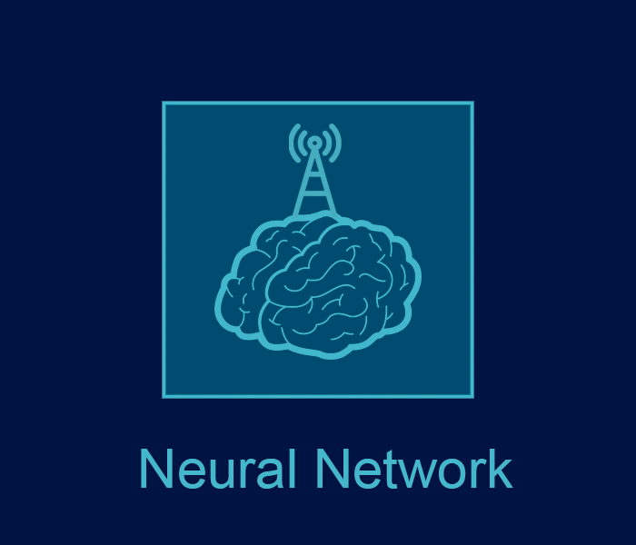

"Essa é a explicação desse projeto de texto, feito por mim, Izaque Sanvezzo(hm172002), eu estou usando essa identificação explicada no projeto "UIH"(Holograma de Identificação Universal), e eu estou aqui pra explicar esse projeto, esse arquivo de texto está sendo escrito em 13/06/2018 em anos humanos(homo sapiens), esse projeto "Future" serve para ensinar e explicar e mostrar o futuro, o que a Terra poderia ser, que tecnologia nós teremos, e é pra mostrar o futuro do mundo, o Estilo de futuro Old World, eu estou escrevendo esse projeto e esse arquivo de texto com a ajuda de musicas de um jogo chamado Plague Inc., o nome da playlist é "Plague Inc: Original Soundtrack", uma trilha sonora que faz você sentir a tragédia da terra, um futuro ruim, é um jogo sobre soltar uma doença na terra, mas pra mim essas musicas soam como um futuro bom, um futuro cheio de esperança, então vou escrever esse projeto com esses sentimentos.", -Izaque Sanvezzo
| | | | | | |
| Guia De Nomes |
Governo: "Um Governo que cuida de todos os seres, e tenta proteger e ajudar os seres de outras galáxias e planetas, foi criado no Planeta Terra na Via Láctea pelos Humanos (Homo Sapiens), tem um Sistema chamado Basic Pack ou Neural Network".
Old World(Mundo): "É como os seres do Governo chamam o Planeta Terra (Galáxia: Via Láctea) quando o governo não existia."
Old World(Seres): "É como os seres no Governo chamam os seres que não são do Governo e não usam o Sistema(Basic Pack e Neural Network)."
New World(Mundo): "É como os seres do Governo chamam o Planeta Terra (Galáxia: Via Láctea) quando o Governo começou."
New World(Seres): "É como os seres no Governo chamam os seres que são do Governo e usam o Sistema(Basic Pack e Neural Network)."
| | | | | | |
| Inscrição Para O Governo |
Para entrar no Governo você precisa ser um ser, você receberá muitas coisas depois de entrar.
Você receberá um:
Neural Network: "Neural Network é uma maneira de criar hologramas e interfaces com o seu cérebro, ele vem com o Basic Pack (BP) 1.0 e 2.0, você pode usar o seu cérebro para fazer um monte de coisas, como navegar na Internet usando sua retina, ver o seu UIH (Universal Identification Hologram), e alterar e criar arquivos no explorador de arquivos."
E um:
Basic Pack: "O Basic Pack é um pacote neural que você obtém quando se junta ao Governo(Governo Geral dos Seres), ele lhe dará a habilidade de fazer hologramas, interfaces de retina e modificar o mundo ao seu redor, o pacote é básico e outros usuários do governo criam pacotes pessoais, alguns vêm com armas, jogos instalados, pacote de músicas, cores alternativas de holograma."
E também um:
Holograma de identificação universal (UIH): "UIH é um holograma que contém o Uid, pode ser visualizado usando um holograma de mão ou uma interface de retina."
Identificação Universal (Uid): "Uid é uma maneira de dar a cada ser sapiente uma identificação única".
Você também terá a chance de evoluir para um ser neural, se você for um humano (Homo Sapiens), você reterá sua forma física, mas será um ser neural, sendo feito de energia neural, como uma alma, então se seu corpo nativo tem necessidades, sua forma de evolução ou forma neural não as terá, como fome, necessidade de oxigênio, sangue ou água.
Existem algumas Leis Universais nas quais você concordara depois de se juntar ao governo:
Você não pode modificar um ser sem o consentimento dele(como cortar, queimar, congelar, tele-transportar).
Você não pode roubar algo de um ser(como um item, um objeto).
Você não pode quebrar estruturas físicas e itens que não pertencem a você(como uma casa ou uma espada).
Basicamente você não pode modificar coisas de outros seres ou os seres sem permissão deles.
Você pode matar um ser se você estiver em um duelo ou lutar em um ambiente simulado(como um jogo ou um ambiente neural).
| | | | | | |
| Tecnologia de Identificação |
Essa é a documentação do Holograma de Identificação Universal(HIU), que é tipo um "CPF" do futuro:
Formato da Uid: [nome] [sobrenome] ([raça][sexo_da_raça][idade_em_anos_planetarios][ano_de_nascimento_em_anos_planetarios]) Exemplo: "Izaque Sanvezzo(hm172002)"
Identificação Universal(Uid): "Uid é uma forma de dar a todo ser sapiente uma identificação única"
Expansão de Formato:
[nome]: Uma palavra ou uma combinação de palavras pelas quais um ser, lugar ou coisa, um corpo ou classe, ou qualquer objeto de pensamento é designado, chamado ou conhecido.
[sobrenome]: Um nome hereditário comum a todos os membros de uma família, distinto de um nome dado.
[raça]: Uma classificação arbitrária de seres, às vezes, especialmente anteriormente, com base em qualquer ou uma combinação de várias características físicas, como a cor da pele, forma facial ou forma do olho, e agora baseado com freqüência em marcadores genéticos como grupos sanguíneos.
[sexo_da_raça]: Uma das duas categorias principais (masculino e feminino) em que os seres são divididos com base em suas funções reprodutivas.
[idade_em_anos_planetarios]: Um período de vida, medido por anos desde o nascimento, geralmente marcado por um certo estágio ou grau de desenvolvimento mental ou físico e envolvendo responsabilidade e capacidade legais, alguns números de idade podem ser diferentes de planeta a planeta, exemplo: 79 anos no planeta Terra na galáxia Via Láctea é igual a 39 anos para o planeta Marte na galáxia Via Láctea.
[ano_de_nascimento_em_anos_planetarios]: O ano que um ser nasceu no numero de idade do planeta que ele nasceu.
| Identificação de Planeta |
[nome_do_planeta]: Uma palavra ou uma combinação de palavras pelas quais planeta é designado, chamado ou conhecido.
[galaxia_do_planeta]: Um espaço físico que um planeta reside.
[numero_da_população_planetario]: O número de seres na área de um planeta.
[ano_atual_do_planeta]: O ano atual nos números de calendário desse planeta, exemplo: quando as espécies de "Homo sapiens" pousaram em sua Lua o ano atual no planeta Terra na galáxia Via Láctea foi 1969.
| | | | | | |
| HIU Para o ser 'Izaque Sanvezzo(hm172002)' |
Izaque Sanvezzo(hm172002):
Nome: Izaque
Sobrenome: Sanvezzo
Nome Completo: Izaque Sanvezzo
Raça: Homo Sapiens(Sapiens)
Sexo da Raça: Masculino
Idade Em Anos Planetarios: 17(Em Anos Do Planeta Terra)
Nascido No Ano: 2002(Em Anos Do Planeta Terra)
Nascido No Planeta: EarthMW(7B2019)
EarthMW(7B2019):
Nome Dado Pela Espécie Local: Planeta Terra
Fica Na Galáxia: Via Láctea
Numero De Seres: 7 Bilhões
Ano Atual No Calendario Do Planeta: 2019
| HIU Para o ser 'Maria Luiza(hf152003)' |
Maria Luiza(hf152003):
Nome: Maria
Sobrenome: Luiza
Nome Completo: Maria Luiza
Raça: Homo Sapiens(Sapiens)
Sexo da Raça: Feminino
Idade Em Anos Planetarios: 15(Em Anos Do Planeta Terra)
Nascido No Ano: 2003(Em Anos Do Planeta Terra)
Nascido No Planeta: EarthMW(7B2019)
EarthMW(7B2019):
Nome Dado Pela Espécie Local: Planeta Terra
Fica Na Galáxia: Via Láctea
Numero De Seres: 7 Bilhões
Ano Atual No Calendario Do Planeta: 2019
2019: Tecnologia Controlada Por Olho,
Avanços no rosto e nos softwares(programas) de reconhecimento de movimento resulta em uma era de maquinas que são controladas por gestos ou movimentos de olho.
2020: Diagnósticos de papel,
Ferramentas de diagnostico baratas feitas de papel especificamente projetadas possibilitam rápida visualização de Ebola, tuberculose, Zika, Gripe suína e muitas outras doenças.
2023: Criação de antibióticos,
Tecnologia avançada pra criar macrólidos permite antibióticos baratos e feitos sob medida para derrotar "superinsetos".
2024: Robôs ingeriveis,
Microrôbos biocompatíveis e consumíveis que curam nossos ferimentos por dentro.
2026: Roupas inteligentes,
Tecidos nano-porosos, eletrônica miniaturizada e a reação ao toque permitem que "roupas inteligentes" mudem de cor ou forma, e mantenham você aquecido ou fresco se necessário.
2027: Fótons no espaço,
Tecnologia Fotônica significa mais largura de banda, uma velocidade de dados 100 segundos mais rápida que a freqüência de rádio, e menor necessidade de energia na comunicação espacial.
2028: Mineração vulcânica,
Extração de metais preciosos e minerais de vulcões submarinos ativos se torna possível e econômico.
Revolução de Gira-tronicos,
A rápida comercialização de "girotronicos" (tecnologia de orbita de giro elétron) revoluciona smartphones, tecnologia "inteligente", e a internet das coisas.
2029: Baterias a carbono,
Células eletroquímicas que usam CO2 para gerar eletricidade e subprodutos valiosos, resolvendo de uma vez nossas preocupações sobre energia e poluição.
2030: Super antivirais,
Remédios antivirais de amplo espectro, baseado na mutação ISG15 e outras terapias genéticas, chegam no mercado.
2031: Baterias diamante,
"Baterias Nucleares" são formadas colocando desperdício radioativo em diamantes artificiais que convertem radiação em eletricidade.
2032: Optogenética,
Depois de uma década de engenharia optogenética e pesquisas, transtornos neurológicos como Parkinson, Alzheimer, Tourette, esquizofrenia, autismo, e muitas outras são tratáveis.
2033: Nano Viabilidade,
Foto-motores orientados por luz e tecnologia inspirada em DNA finalmente se espalham, nano-tecnologia barata.
Energia Solar Barata,
Celulas solares orgânicas e Perovskite perto de 100% da eficiência; inovações em técnicas de manufatura fazem a energia solar ser amplamente disponível.
2034: Internet quântica não-hackeável,
Uma rede de satélites usando fótons emaranhados para distribuição chave-quântica (QKD) vão criar uma internet segura e não-hackeável.
2035: Materiais Biomiméticos,
Novos materiais, inspirados pelo comportamento das coisas vivas, levaram a roupas-autolimpantes, construções que se auto-reparam, e a eliminação de embalagens de plastico.
2036: A próxima evolução da I.A.,
Analise de Big Data e Inteligencia artificial preditiva vem da idade do tempo, pra eleições, geopolítica, evolução, e muito mais, o futuro se tornou quase desanimadoramente previsível.
Moléculas design,
Moléculas artificiais feitas de "superatomos," com propriedades magnéticas e químicas jamais vistas, proporcionam a criação de novos materiais revolucionários.
2037: Impressão 3D em todas as casas,
O melhor em compras em casa: impressoras 3D baratas em toda casa podem imprimir quase qualquer coisa- eletrônicos, mobilia, comida, e medicina-de arquivos comprados e baixados da internet.
2038: Interface de computador totalmente imersiva,
Interação intuitiva com o ambiente, Infoentretenimento, surf na web e o que você tem através de avanços no VR/AR(Realidade Virtual/Realidade aumentada), mapeamento de projeto, interação com a mão(texto original: Haptics), e interface cérebro-computador.
2039: Ecossistema de energia auto-suficiente,
Células de combustível microbiais, Tanques de digestão anaeróbicos, baterias de lítio-íon e tecnologias de células solares significam que virtualmente toda casa agora é um ecossistema de energia auto-sustentável de ciclo fechado.
Modificação genética de linha-de-embrião,
A primeira legislação hesitante aprovando "bebês construtores" começa a aparecer nos órgãos legislativos do mundo.
2040: Computação genética,
"Genetronica" vem de idade- microeletrônicos de auto-montagem feitos de material genético, e supercomputadores baseados em DNA mais pequenos que um notebook(laptop).
2041: Bichos-de-estimação holográficos,
Bichos-de-estimação holográficos viram a nova "coisa"-interativa, hologramas de inteligencia artificial que expressam e respondem a emoções. sites de encontros holográficos também decolam.
Foguetes Microondas,
O uso dos Gira-tronicos de matrizes Microondas para mandar foguetes leves em orbita reduz dramaticamente o custo de acesso a espaço.
2043: Rápida triagem genética,
Fáceis diagnósticos genéticos em casa levaram a medicina customizada, drogas(remédios) baseados em genômica, e uma revolução no estudo no estudo da historia da genética.
2044: Poder de fusão,
Poder de fusão é comercialmente disponível; os planos de infraestrutura estão em andamento para converter a grade para pelo menos 75% de energia derivada de fusão em duas décadas.
2045: Energia solar baseada no espaço.
A tecnologia para estações de transmissão de energia solar que ficam no espaço, e antenas de recepção na terra, finalmente se torna economicamente viável.
Avanços algorítmicos,
Algorítimos sofisticados-o produto da computação quântica avançada-alcança maravilhas na medicina, astronomia, a busca por vida extra-terrestre, economia, arquitetura, e reconstruindo a historia da evolução na Terra.
2047: Aprimoramento evolucionário,
Manipulação genética do gene ósseo osteo-crino cria indivíduos com um neocórtex mais largo e cognição aprimorada.
2049: Geoengenharia,
Um programa de engenharia de aerosol de calcita começa a esfriar o planeta e a reparar a camada de ozônio.
2050: Sequestro de Carbono,
Programas para injetar grandes quantidades de CO2 atmosférico em rocha basáltica, para armazenamento permanente, se tornam práticas, e amplamente implementadas.
2053: Satélites de geo-neutrino,
Telescópios de geo-neutrino no espaço providenciam escaneamento do interior da terra;
Telescópios similares sondam os interiores do sol e de Jupiter.
2055: Cidades no topo da onda e abaixo do mar,
Cidades flutuantes e abaixo do mar, feitas para minerar combustível de fusão deuterium da agua do mar, chegam como estado-cidades saudáveis e poderosas na segunda metade do Século 21.
| | | | | | |
| Tecnologias New World |

Neural Network:
"Neural Network é uma maneira de criar hologramas e interfaces com o seu cérebro, ele vem com o Basic Pack (BP) 1.0 e 2.0, você pode usar o seu cérebro para fazer um monte de coisas, como navegar na Internet usando sua retina, ver o seu UIH (Universal Identification Hologram), e alterar e criar arquivos no explorador de arquivos."
Basic Pack: "Basic Pack é um pacote neural que você adquire quando você se junta ao Governo(Governo Geral dos Seres), ele lhe dará a habilidade de fazer hologramas, interfaces de retina e modificar o mundo ao seu redor você, o pacote é básico, e outros usuários do governo criam pacotes pessoais, alguns vêm com armas, jogos instalados, pacote de músicas, cores alternativas de holograma."
Holograma: "Um holograma é uma coisa que você pode tocar e ver, você pode ver um holograma porque o pacote básico cria o holograma e envia ondas cerebrais para o cérebro, você também pode toca-los, tipo você imaginar um tocador de música aparecer na sua frente, você pode escolher uma música imaginando-a e clicar em pausa com o dedo, a cor padrão dos hologramas que vem com o Basic Pack 2.0 é Light Blue(Azul Claro)."
Retina Interface: "Uma interface de retina é uma interface que fica na sua retina, e ninguém além de você pode ver a interface, ela pode ser criada imaginando-a e controlada com seu cérebro, você pode abrir um navegador, um media player, explorador de arquivos, a cor padrão das bordas da Interface Retina no Basic Pack 2.0 é Light Blue(Azul Claro), a cor de fundo padrão é Dark Blue(Azul Escuro)."
Moeda: "É um tipo de moeda que você pode ter vendendo itens e pacotes neurais para outros usuários do governo, e também fazendo coisas boas como ajudar alguém que está com fome, pode ser chamado por muitos nomes, o nome padrão é Serial Points, o ícone é "SP", mas se você mudar sua moeda para "HP", você falará HP e outro ser ouvirá SP ou seu nome de moeda personalizado."
Media Player: "O media player é um holograma ou interface que se conecta à Universal Music Library, ele pode reproduzir todas as músicas que foram feitas no universo, até mesmo as procedurais, também pode reproduzir sons fisicamente como falantes, ou pode enviar o som através de ondas cerebrais para o cérebro daqueles que querem ouvir."
Being Settings Panel: "Este menu pode ser acessado usando a interface de retina e pode mudar muitas coisas, você pode ir para a primeira aba dele que é "Seres", lá você pode modificar como você vê seres e outras partes do corpo, você pode desativar a visualização dos genitais ou colocar uma barra de censura, há uma aba chamada "Moeda", onde você pode modificar sua moeda, como é o ícone, o nome. "
Holograma de identificação universal (UIH): "UIH é um holograma que contém o Uid, pode ser visualizado usando um holograma de mão ou uma interface de retina."
Identificação Universal (Uid): "Uid é uma maneira de dar a cada ser senciente uma identificação única".
File Explorer: "O explorador de arquivos é uma interface ou seção da Interface Básica do Navegador que você pode usar para criar e modificar arquivos, as informações e arquivos são armazenados em um cérebro holográfico que é anexado ao seu cérebro por um link neural, tem muito espaço de armazenamento."